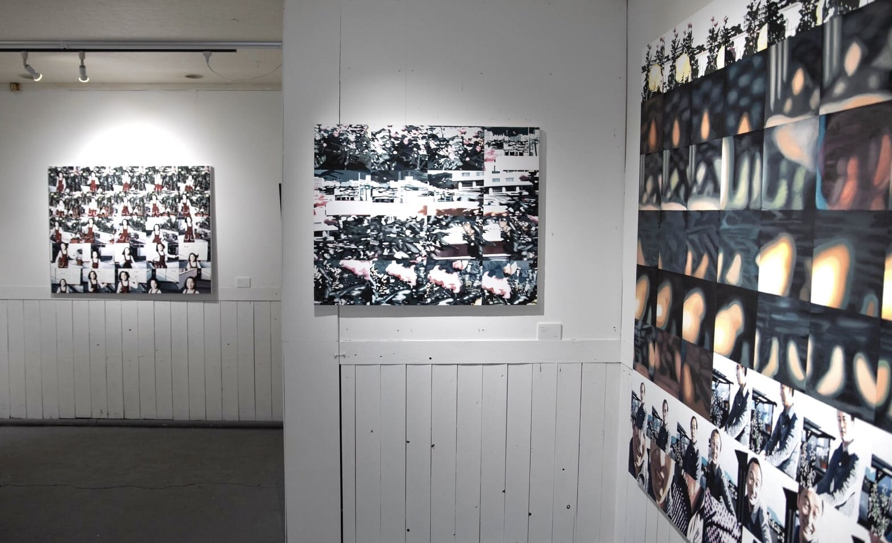
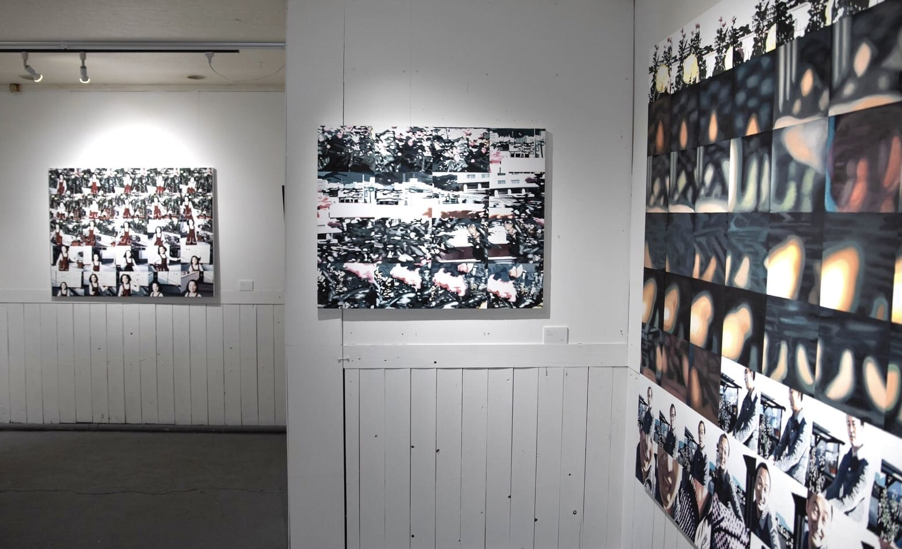
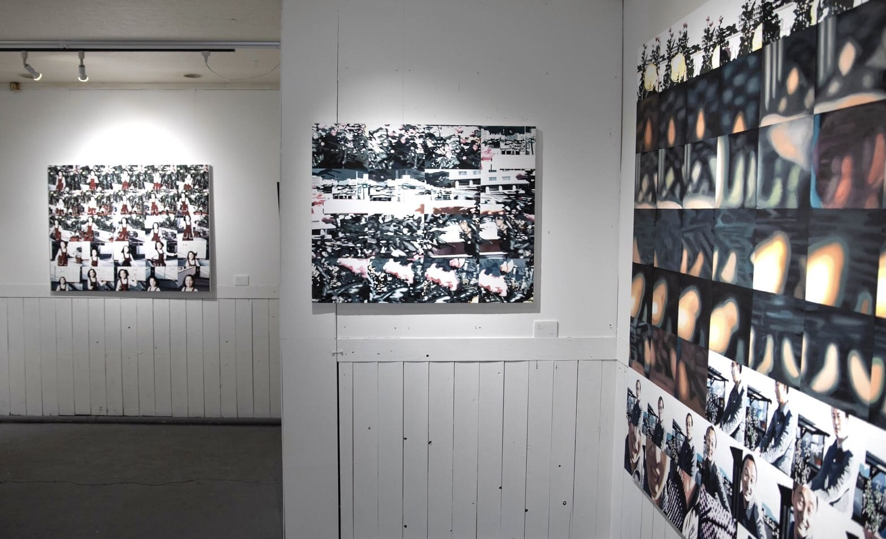
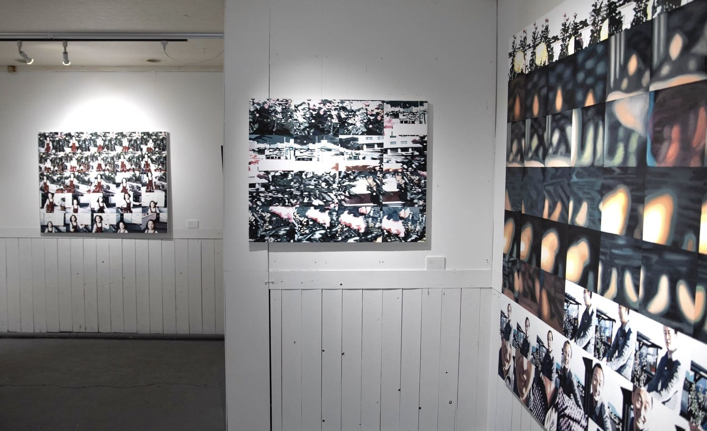
在資訊時代，智慧型手機已成為我們日常生活中不可或缺的工具。隨著網際網路與數位技術的快速發展，我們能即時得知世界各地發生的事件。然而，這種便利也帶來了副作用──當我們在旅途中看見美麗風景時，常常急於用手機拍照、錄影，並分享到社群媒體，而忽略了真正地體驗當下。這些影像儲存在雲端，逐漸累積成龐大的集合體，而其中的每一份資料都可能在資訊的洪流中被掩蓋與遺忘。這些記錄被體驗為稍縱即逝的瞬間，最終化為一種逐漸消失的痕跡。
在底片攝影尚需謹慎選擇拍攝對象的年代，人們對影像充滿敬意。在我祖父過世那天，我發現了他留下的 8mm 底片，片中是他以滿懷愛意拍攝的我母親。半個世紀前，祖父與母親的日常片段被細膩記錄下來，成為珍貴的回憶。然而，隨著科技演進，這些老舊媒材面臨被淘汰的命運。祖父的 8mm 底片終將無法再被播放。 為了保存我所不曾見過、卻極為重要的記憶，我將這些影像一格一格畫在畫布上，追溯那些我無法親身回憶的時間痕跡。這就是我所稱的「Footage Paintings（片段繪畫）」計畫的起點。起初的構想是將一段影像分解為多張靜止畫面，逐格繪製在同一畫布上，透過畫格的連接，形成一種具有連續性的動畫。
這個創作概念的靈感來自藝術史上的多位先驅： 首先是 Eadweard Muybridge（1830–1904），他開創了將動作分解為連續照片的實驗，成為電影技術的基礎。我參考其方法，將時間分割為靜止畫面，再重新拼組成時間流動的軌跡。 其次是 Gerhard Richter（1932–），他在其「照片繪畫」系列中模糊了攝影與繪畫的界線，強調媒介間的模稜兩可。我也從中得到啟發，思考在畫布上重新描繪已被拍攝之物的意義。 「Footage Paintings」正是建立在這兩者之間的張力之中。攝影定格瞬間，電影延續時間，而我試圖透過繪畫與動畫的結合，使觀者得以感知時間的流逝。
這件作品的靈感來自祖父留下的 8mm 底片。在影像與資訊充斥的時代，辨識真實與虛構變得日益重要。然而，五十年前祖父鏡頭下母親燦笑的畫面，是真實且富含情感的記錄，展現了資訊的實質性。那是我未曾經歷，卻想銘記於世的風景。我追尋他們的記憶，並將之捕捉於我的畫作之中。

 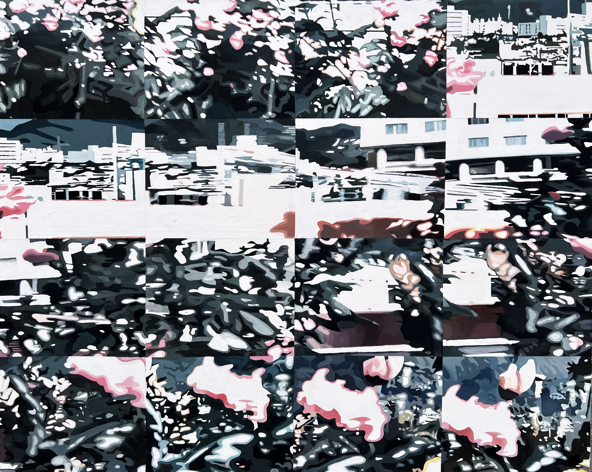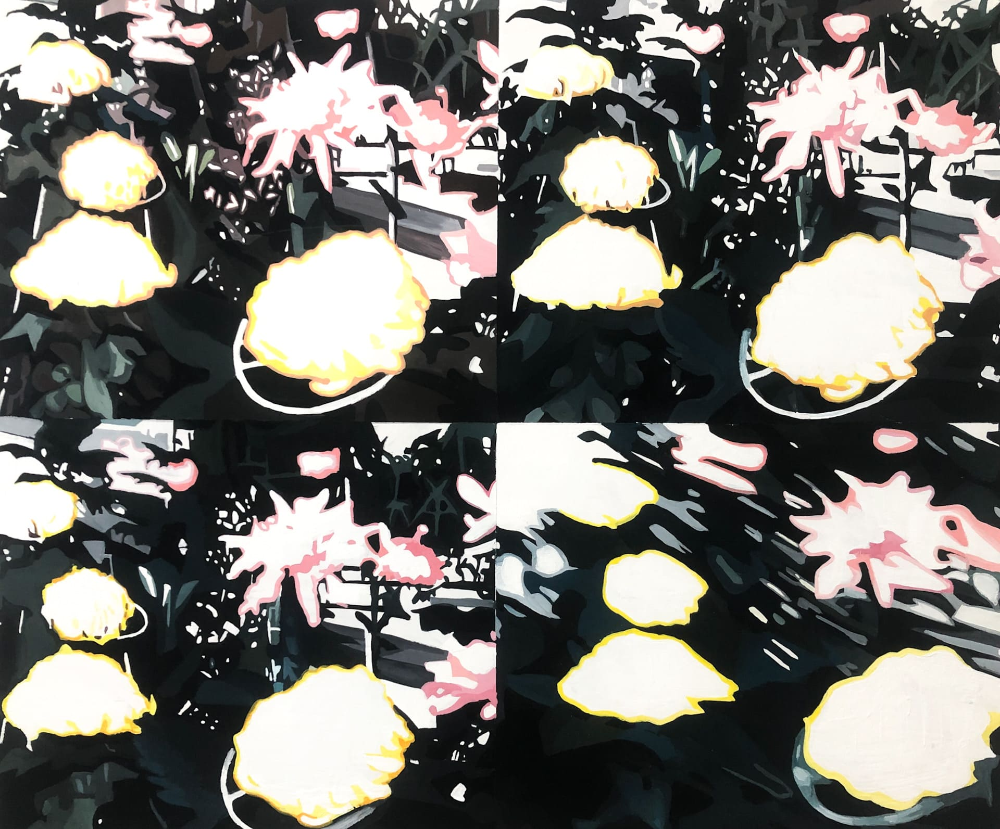
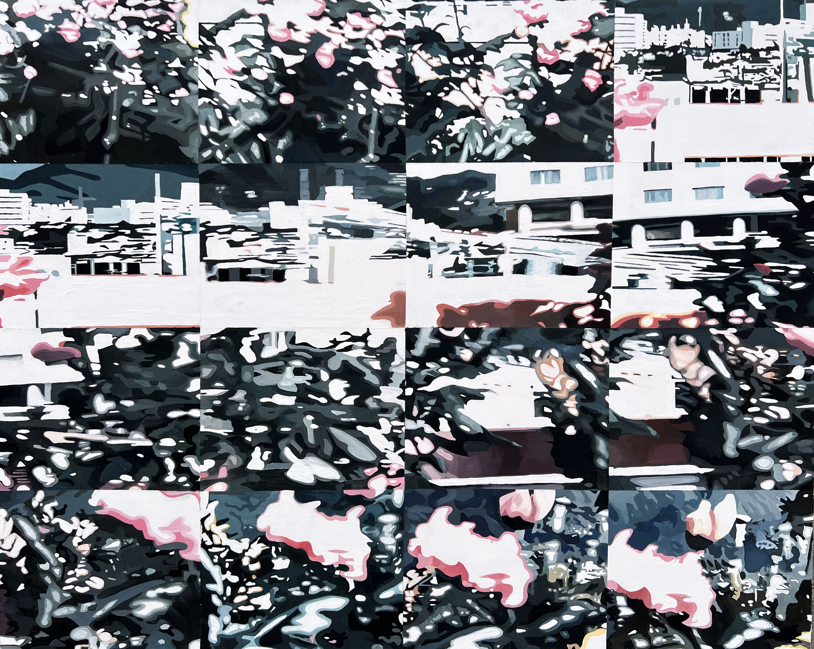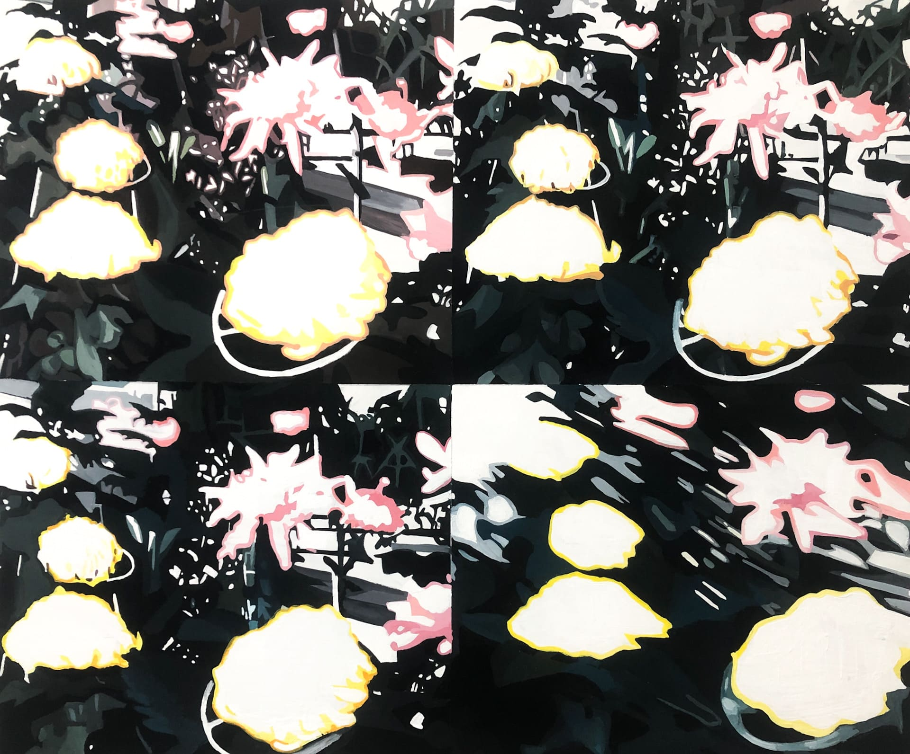 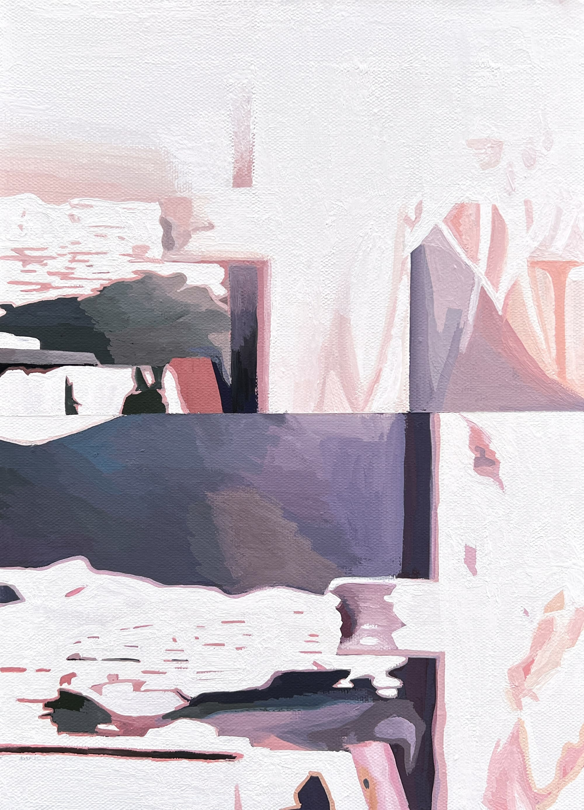
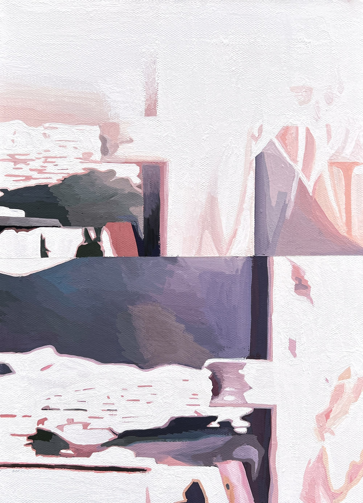
《WAVES》系列取材自我以智慧型手機拍攝的水面影片，並結合繪畫與動畫的形式創作。延續《Footage Paintings》中對「資訊社會中的個人」的關注，我將創作焦點放在 TikTok 與 YouTube Shorts 等平台上常見的垂直畫幅，將這些稍縱即逝的短影音比擬為波浪。影片像浪潮一樣，來去匆匆，形成獨特的垂直視覺構圖。 我試圖將這些儲存在雲端的數位浪潮轉化為自然界中實存的波浪──海浪與河流──並透過繪畫這一具象媒介加以捕捉，讓虛擬資訊的瞬時性與自然律動的恆常性形成對照。

 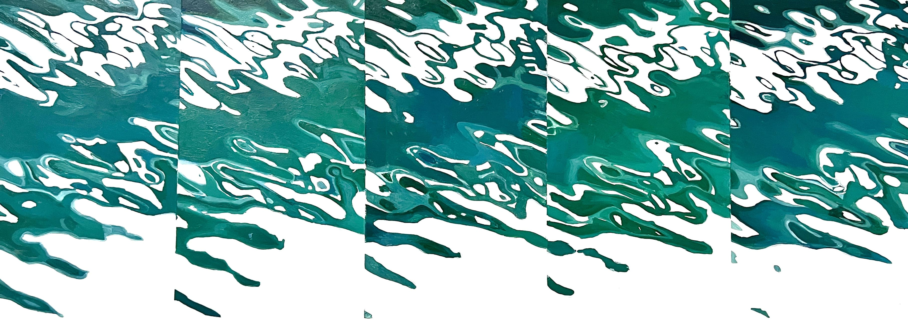
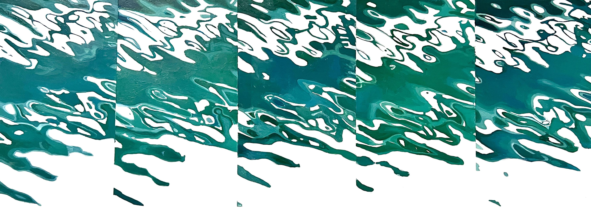 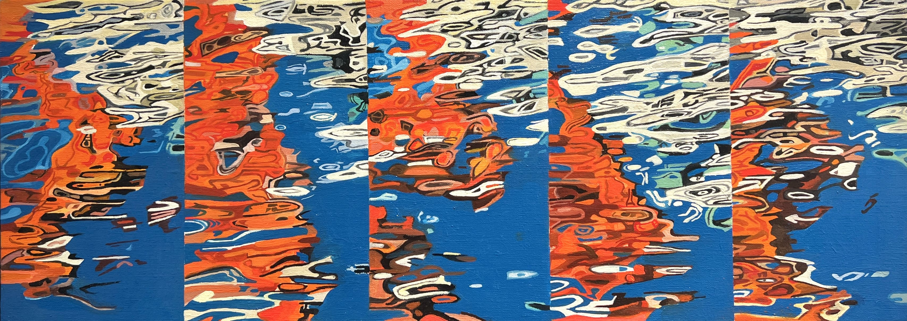
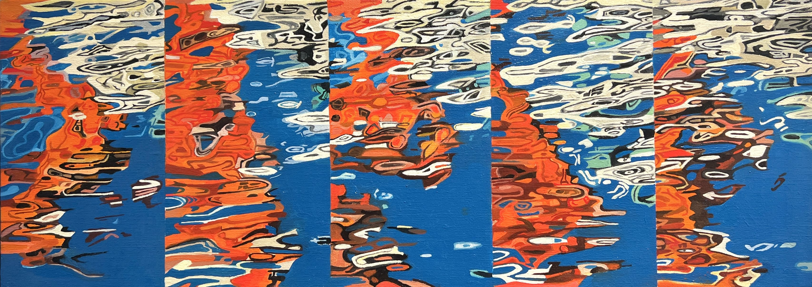
 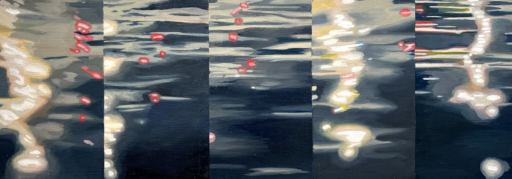
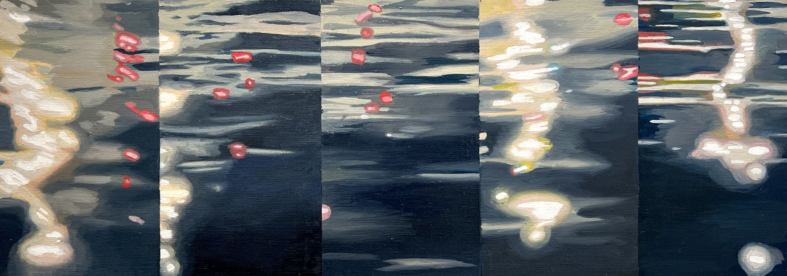 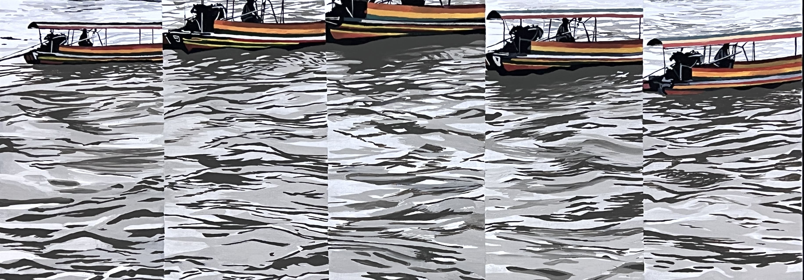
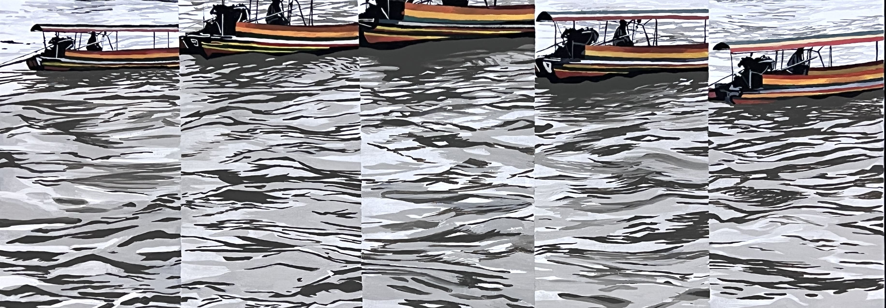
「同步」（adj.）意指在完全相同的時間發生或進行。 這件作品源自我與全球各地朋友的視訊通話。我撇除時差的概念，與遠方的友人同步觀看不同城市河面上的倒影，也利用遍佈世界的即時攝影機，描繪出日本時間 2024年1月9日凌晨 12:30，各地城市的風景──長崎、紐約、烏克蘭、夏威夷、澀谷、加薩──我無法親身見證的地方，卻能藉由網路共同經驗那一刻的同步性。 在資訊極度即時的今天，這樣的經驗呈現了一種新型態的現實感：我們的日常生活透過科技連結，被同時觀看、共同感受，並因此產生某種情感上的交會。


松村優里香
1996年出生，現居日本長崎
「Footage Paintings（片段繪畫）」是一種同時可視為繪畫與錄像的創作形式。為了讓時間之流顯現於畫布表面，我將影片逐格拆解並手繪於畫布上。這些靜止畫面連結起來，即成為動畫。
我將影像投射出的世界，轉譯為一幅幅畫作。雖然繪畫與影像通常被視為分屬不同媒介，我嘗試在其中建立連結與穿透，創作超越媒介疆界的作品，並以「錄像繪畫」之名呼之。
如有疑問或合作機會，請與我聯絡：yurikamatsumura.p@gmail.com